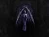

NO, I DID NOT CREATE THESE IMAGES SO I CAN'T GIVE YOU PERMISSION TO USE THEM FOR YOUR BAND.
Warning: do not link directly to images on this site.

These are the images I use for my backgrounds (click to enlarge). They are from the
DarkAlloy Enlightenment theme created by
Scarab. The middle one, gothic-angel, is my favorite.
These are screenshots from my desktop. From the lowest layer up:
- Linux
- XFree86
- Enlightenment with theme Anomoly
- Eterm with theme Glass (slightly modified)
I've never posted a desktop screenshot before, that I can remember, because I tend to not use X enough to bother to make it pretty enough to bother posting screenshots of.
One day last week, I came across a screenshot on e.themes.org that had something in it I was *very* interested in -- it was the eterm in a picture on e.themes.org.
An eterm.. transparent with beveled edges, including the titlebar.
Yesterday I found out it was the "glass" theme. So I did a google search for eterm glass, and found it on eterm's themes page, set it up, and it was pretty, but not quite what I wanted. It didn't have the transparent/beveled titlebar.
I asked in #e more about it. They said it was because I needed the eterm 0.9.1 version. I found a .deb of it, installed it, and loaded up the version of the glass theme for eterm 0.9.1. Looked exactly the way I wanted it. Except it didn't work the way I expected. The titlebar wasn't a titlebar -- it was just a menu bar. There was no way for me to drag the thing around.
It sunk in that you couldn't do that with an eterm theme. You'd need an enlightenment theme.
I want a glass theme for enlightenment... all the titlebars and stuff transparent and tinted, with beveled edges.
In the meantime, I edited the glass theme, and remarked out the "borderless true" line so I could control the thing, and then went in search of an e theme that looked pretty with it.
So I downloaded all the themes off of e.themes.org that had the string "dr16" in their name. Yes, over my 33.6 modem.
Downloaded: 73,127,621 bytes in 108 files
I don't think I've quite finished viewing the last few, but I've got through most.
The one I liked was anomoly. It's neat. Very dark.. not only in colors but in shapes.. organic, not mechanical.
Of course, I had my usual problem of not being able to freaking read anything at 1600x1200 on my 19" monitor, so I set about figuring out how to change the fonts in a theme. I ended up changing them to the fonts used on the warp (os/2) theme, because I noticed they were extreemly readable for their size.
The background in the screenshot is taken from the theme DarkAlloy, from the same guy. There are a number of similarly cool backgrounds in it.
Comment on this page.
Return to Darxus' home page.
Fri Nov 03 15:42:56 2000
{kind=link}
{kind=link}
{kind=link}
{kind=link}
{kind=link}
{kind=link}
{kind=link}